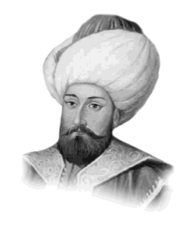

MURAT HÜDAVENDİGÂR
Annesi : Nilüfer Hatun
Doğumu : 1326
Vefatı : 1389
Saltanatı : 1359 - 1389 (30 yıl)
Sultan Murat uzun boylu, değirmi yüzlü, iri burunlu idi. Kalın ve adaleli bir vücuda sahipti. Başına Mevlevi sikkesi üzerine yuvarlak bir başlık giyerdi. Çok sade giyinir ve kırmızı zeminli beyaz elbiseden hoşlanırdı. Gayet nazik, sevimli, çok halim ve selimdi. Âlim ve sanatkârlara hürmet gösterir, fakirlere ve kimsesizlere büyük bir şefkatle muamele ederdi. Halk tarafından “Gazi Hünkâr” diye anılır ve bir baba olarak sevilirdi. Terbiyesi ile annesi Nilüfer Hatun meşgul oldu. Gençliğini Bursa’da medreselerde, ilim adamları ile geçirdi. Bütün hayatı sınır boylarında ve savaş meydanlarında geçmiştir. Hiç durmadan Rumeli’den Anadolu’ya, Anadolu’dan Rumeli’ye seferler yapmıştır. Bu kadar savaş meşguliyetleri arasında, büyük ve kıymetli binalar, sanat eserleri meydana getirmeye de vakit bulmuştur. Bur-sa’da camiler, medreseler ve imarethaneler yaptırmıştır. Edirne’yi ilk defa O, hükümet merkezi yapmıştır. İlk Edirne sarayı da kendisi bina ettirmiştir. Orhan Gazi’nin vefatında 95.000 km2 olan toprakların genişliğini 500.000 km2 ye çıkardı.
Zamanında alınan yerler: 1362’de Edirne, 1363’de eski Zağra ve Filibe fethedildi. 1364’de Sırpsındığı Zaferi kazanıldı ve Haçlılar perişan edildi. 1365’de Kara Biga Osmanlı topraklarına katıldı. 1369’da Hayrabolu, Kırklareli, Pınarhi-sar ve Vize alındı. 1370’de Bulgar Krallığı Osmanlılara tâbi oldu. Bir müddet sonra da Çamurlusavay kazanıldı. 1371’de Çirmen zaferi elde edildi, Haçlılar bir defa daha yenildiler. 1372’de Çatalca Bizans’tan alındı. 1374’de Sırbistan Osmanlılara tâbi oldu. 1375’de Niş fethedildi. 1378’de Kütahya Vilâyeti Osmanlı topraklarına katıldı. 1382’de Sofya fethedildi. 1383’de Candaroğulları Osmanlılara tâbi oldu. 1385’de Arnavutluk’un kuzeyi tamamen alındı. 1386’da Karamanlılarla savaşıldı. 1388’de Silistre, Ziştovi, Niğbolu, Plevne, Lofça, Deliorman ve Dobruca Türk hâkimiyeti altına alındı. 1389’da Haçlılar bir defa daha perişan edildiler ve İslâm ordusunun yiğitlikleri sonunda Kosova Meydan Muharebesi kazanıldı. Ne yazık ki bu şanlı zafer çok büyük bir acı ile neticelendi. Bütün gazileri derin bir matem içinde bıraktı. Şöyle ki; bu zafer sonunda yaralıların büyük bir kısmı düşman askerleri idi. Yerdekiler arasında tek Türk şehidi de vardı. Sultan Murat her şehidin önüne geldiği vakit büyük bir üzüntü ile “İnna lillâhi ve inna ileyhi râciün” diyor ve şehidin derhal kaldırılarak defnedilmesini emrediyordu. Yaralı bir Türk’ün yanına geldiği zaman, onu okşuyor, yarasının acıyıp acımadığını ve bir arzusu olup olmadığını soruyordu. Böylece dolaşırken biraz uzakta ölüler arasında bir kımıldama oldu. Sultan Murat o tarafa döndü. Ölüler arasından, dev gibi uzun boylu bir Sırplının kalktığı görüldü. Miloş ismindeki bu Sırplı (Kral Lazar’ın damadı) yerden kalkarak padişaha doğru gelmeye başladı. Padişahın muhafızları ise, Sırplıyı derhal yakaladılar. Fakat Sırplı, padişahı mutlaka görmek istiyordu ve, “Beni bırakınız, korkmanıza lüzum yok. Ben Padişahın elini öpmeye ve hem de Müslüman olmaya geldim. Ayrıca size bir de müjdem var. Kral Lazar yakalandı, bakınız getiriyorlar” dedi. Padişah onun sözlerini işitmişti. İşaret ederek bırakmalarını söyledi. Muhafızlar da kralın tutulduğu tarafa bakarlarken, yaralı taklidi yapan hain Sırplı, padişaha yaklaştı, elini öpecekmiş gibi eğildi, bir anda ve yıldırım sürati ile koltuğunun altında sakladığı hançerini çekerek, Gazi Hünkâr’ın mübarek göğüs ve karnına sapladı. Muhafızlar neye uğradıklarını anlayamadılar. Katil kaçmaya başladı. Sonra muhafızlar kâfiri yakalayarak parça parça ettiler. Hünkâr’ın son sözleri şunlardı: “İslâm’ın muzafferiyeti, benim şehit olmama bağlı ise, şehadet şerbetini nasip buyurmasını Cenabı Hak’tan dua ve niyaz etmiştim. Duam kabul buyuruldu. Hazreti Allah’a hamd ve sena olsun ki, İslâm askerinin zaferini gördükten sonra hayatım sona ermektedir. Oğlum Beyazıt’a biat ediniz. Sakın esirleri incitmeyiniz. Mal ve canlarına tecavüz etmeyiniz. Ben artık sizleri ve muzaffer ordumuzu Cenab-ı Hakk’a emanet ediyorum. Mevla devletimizi bütün fenalıklardan korusun!” diyerek ebediyete intikal etti. Sultan Murat’ın hançerle parçalanan bağırsakları, şehit olduğu yere bir türbe yapılarak gömüldü. Cesedi ise Bursa’ya nakledilerek Çekirge’deki türbesine defnedildi.
Erkek çocukları: Yakup Çelebi, Yıldırım Beyazıt, Savcı Bey ve İbrahim.
Kız çocukları: Nefise ve Sultan.